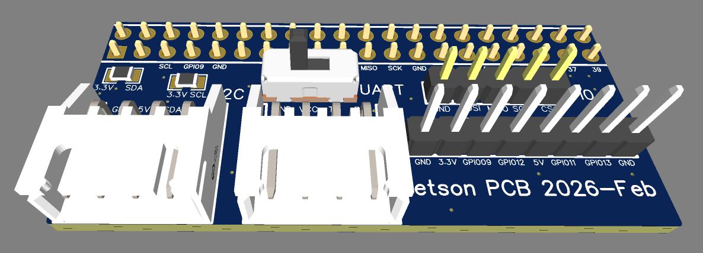
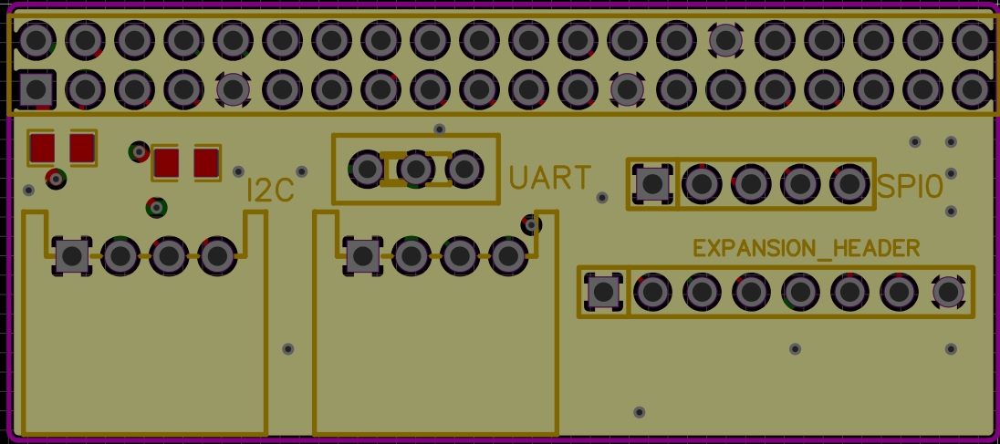
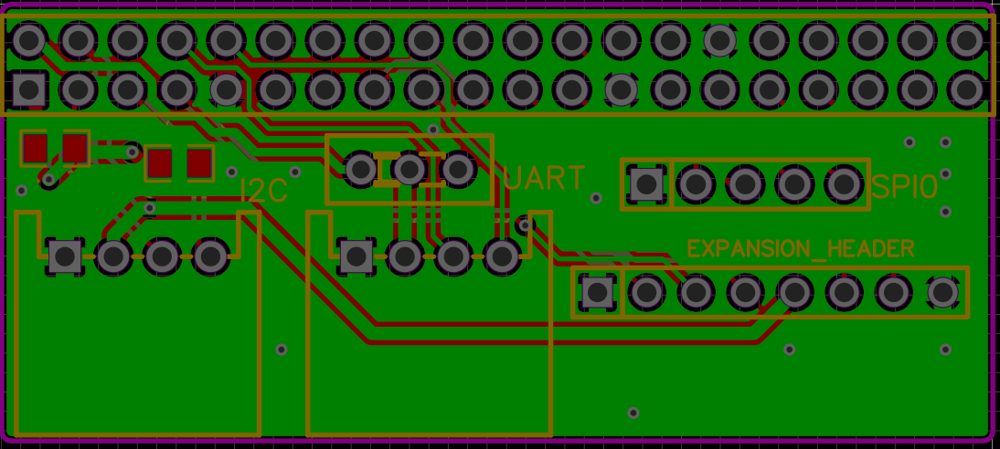
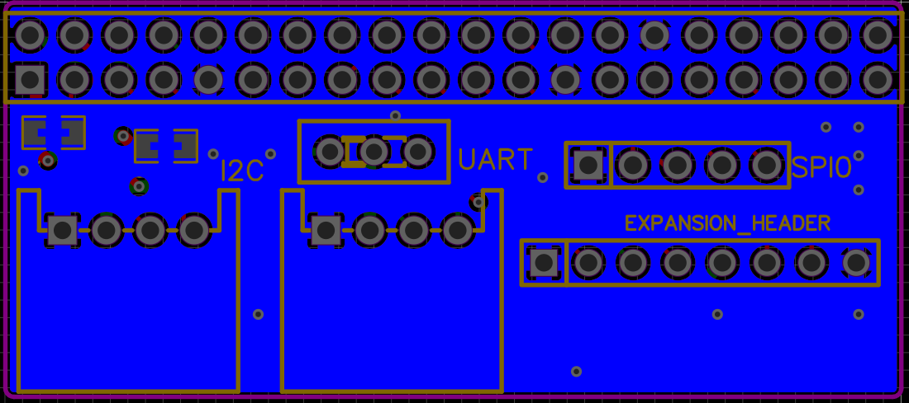

Jetson Breakout Board
4-layer PCB connecting the BNO055 IMU and NVIDIA Jetson Orin Nano
Role
PCB Designer
Tools
Altium Designer
Layers
4
Status
Deployed ×3
Problem
Wire connections between the Jetson Orin Nano and BNO055 IMU were unreliable, with poor debug accessibility. The board needed to support sensor testing without removing the breakout board, all while staying within tight size, budget, and temperature constraints.
Design and approach
Designed a 4-layer PCB with dedicated GND planes for shielding and improved signal integrity on IMU communication lines. Used right-angle XH connectors for UART and I2C to make plugging and unplugging fast during debug. Added a power switch wired to UART for manual on/off control, and included external pull-up resistors as a backup to the Jetson's internal ones for more reliable I2C communication.

First layer (signal)

Second layer (GND)

Third layer (power + signal)

Fourth layer (GND)
Challenges
Add a sentence or two here on something that didn't work on the first try — this section is what separates a case study from a spec sheet.
Results
Completed DRC and applied proper trace widths for power delivery and signal integrity. Fully manufactured and assembled across all 3 Triton Robotics robots. Additional breakout pins eliminated the need for rewiring during debug.